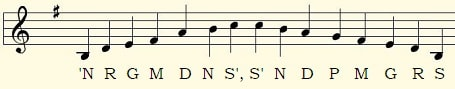
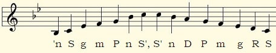
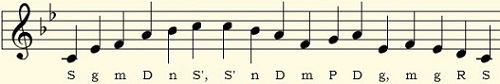
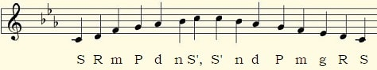
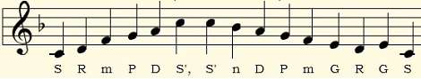
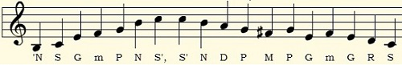

Ragas Classified by Parent Scale (thaat)
~Important ragas you should know~
We began by exploring a few light ragas on the previous page. Let's move on to some bigger ragas now. This page gives you an introduction to raga parent scales through some of the best-loved ragas in Indian classical music – Yaman, Bhimpalasi, Bageshree, Jhinjhoti, Jaunpuri, Bihag, and Bhupali.
Raag Yaman (Kalyan thaat)

Raag Bhimpalasi (Kafi thaat)

Raag Bageshree (Kafi thaat)

Raag Jaunpuri (Asavari thaat)

Raag Jhinjhoti (Khamaj thaat)

Inadequacies of the Thaat-Based Classification System
Not all ragas are easy to classify under a parent scale. Raag Bihag, for instance, uses all the natural notes (Bilawal scale), but it additionally includes the sharp Ma (♯4), which belongs to the Kalyan scale. Now what do we do? Well, if you know Raag Bihag, you will know that natural ma (4) is more fundamental to the raga, while sharp Ma (♯4) is used decoratively. So we classify it under the Bilawal scale.
Raag Bihag (Bilawal thaat)

Let us meet agin in another lesson, Till then Happy Fluting!!